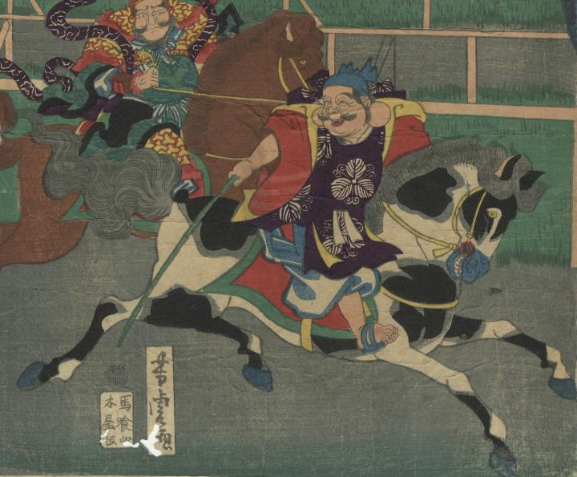

← 图鉴索引

恵比寿が、釣り竿を持って馬に乗っている。
著作者：芳虎／出典：親書誌：U426_nichibunken_0406：七福神九段馬竸；シチフクジン クダン ウマクラベ／日付：2015／資源識別子：U426_nichibunken_0406_0001_0000
Copyright (c)2010- International Research Center for Japanese Studies, Kyoto, Japan. All rights reserved.